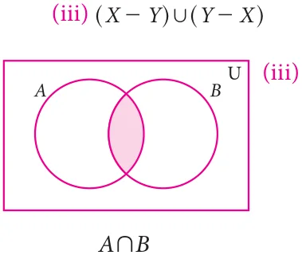
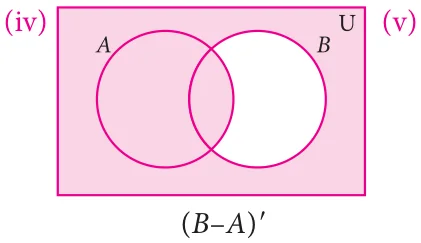
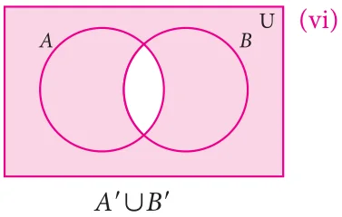
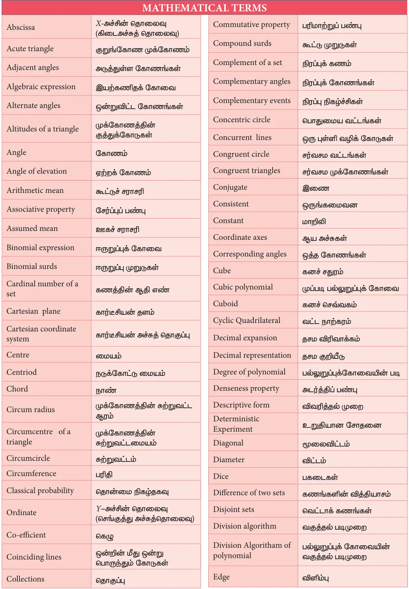

1 Set Language
Exercise 1.1
- (i) set (ii) not a set (iii) Set (iv) not a set
- (i) {I, N, D, A} (ii) {P, A, R, L, E, O, G, M} (iii) {M, I, S, P}
- {C, Z, E, H, O, S, L, V, A, K, I}
- (a) (i) True (ii) True (iii) False (iv) True (v) False (vi) False
- (i) A (ii) C (iii) g (iv) !
- (i) \(A = {2\), 4, 6, 8, 10, 12, 14, 16, 18} (ii) \(B = \%1\) , 42 1 , 61, 81, 10/
- \(C = {64\), 125} (iv) \(D =\) #- 4,- 3,- 2,- 1, 0,1, 2-
- (i) \(B =\) {x : x is an Indian player who scored double centuries in One Day International}
- \(C =\) $x : \(x = n +n 1\), n ! N. (iii) \(D =\) {x : x is a tamil month in a year}
- \(E =\) {x : x is an odd whole number less than 9}
- (i) \(P =\) The set of English months starting with letter 'J'
- \(Q =\) The set of Prime numbers between 5 and 31
- \(R =\) The set of natural numbers less than 5
- \(S =\) The set of English consonants
Exercise 1.2
- (i) n(M) \(= 6\) (ii) n(P) =5 (iii) n(Q) \(= 3\) (iv) n(R) \(= 10\) (v) n(S) =5
- (i) finite (ii) infinite (iii) infinite (iv) finite
- (i) Equivalent sets (ii) Unequal sets (iii) Equal sets (iv) Equivalent sets
- (i) null set (ii) null set (iii) singleton set (iv) null set
- (i) overlapping (ii) disjoint (iii) overlapping
- (i) {square, rhombus} (ii) {circle} (iii) {triangle} (iv) { }
- { }, {a}, {a, b}, {a, {a, b}}
- (i) {{ }, {a}, {b}, {a, b}}
- {{ }, {1}, {2}, {3}, {1, 2}, {1, 3}, {2, 3 }, {1, 2, 3}}
- {{ }, {p}, {q} {r}, {s}, {p, q}, {p, r}, {p, s}, {q, r}, {q, s}, {r, s}, {p, q, r}, {p, q, s}, {p, r, s},
{q, r, s}, {p, q, r, s}} (iv) P(E)= {{ }}
- (i) 8, 7 (ii) 1024, 1023
- (i) 16 (ii) 1 (iii) 8
Exercise 1.3
- (i) {2, 4, 7, 8, 10} (ii) {3, 4, 6, 7, 9, 11} (iii) {2, 3, 4, 6, 7, 8, 9, 10, 11}
- {4, 7} (v) {2, 8, 10} (vi) {3, 6, 9, 11}
- {1, 3, 6, 9, 11, 12} (viii) {1, 2, 8, 10, 12}
- {1, 2, 3, 4, 6, 7, 8, 9, 10, 11, 12}
- (i) {2, 5, 6, 10, 14, 16}, {2, 14}, {6, 10}, {5, 16}
- {a, b, c, e, i, o, u}, {a, e, u}, {b, c}, {i, o}
- {0, 1, 2, 3, 4, 5, 6, 7, 8, 9, 10}, {1, 2, 3, 4, 5}, {6, 7, 8, 9, 10,}, {0}
- {m, a, t, h, e, i, c, s, g, o, r, y}, {e, m, t,}, {a, h, i, c, s}, {g, o, r, y}
- (i) {a, c, e, g} (ii) {b, c, f, g} (iii) {a, b, c, e, f, g} (iv) {c, g} (v) {c, g}
- {a, b, c, e, f, g} (vii) {b, d, f, h} (viii) {a, d, e, h}
- (i) {0, 2, 4, 6} (ii) {1, 4, 6} (iii) {0, 1, 2, 4, 6} (iv) {4, 6} (v) {4, 6}
- {0, 1, 2, 4, 6} (vii) {1, 3, 5, 7} (viii) {0, 2, 3, 5, 7}
- (i) {1, 2, 7} (ii) {m, o, p, q, j} (iii) {6, 9, 10}
- - ^ , ^ - ,^ -


- (i)

\(\cup \cap\) ( \(\cap\) ) '



( - ) ' ' \(\cup\) ' ' \(\cap\) '
- (A \(\cap\) B) ' \(= A\) ' \(\cup B\) '
Exercise 1.4
- (i) {1,2,3,4,5,7,9,11} (ii) {2,5} (iii) {3,5 }
Exercise 1.5
- (i) {3,4,6} (ii) { \(- 1 5\), ,7} (iii) { \(- 3,0 1 2\), , ,3,4,5,6,7,8}
- { \(- 3,0 1 2\), , } (v) {1 2, ,4,6} (vi) {4,6} (vii) { \(- 1 3\), ,4,6}
- (i) { a,b,c,d,e,f } (ii) {a,b,d } (iii) { a,b,c,d,e,f } (iv) {a, b, d }
Exercise 1.6
- (i) 15, 65 (ii) 250, 600 4. (i) 17 (ii) 22 (iii) 47
- (i) 10 (ii) 10 (iii) 25 6. 1000 7. 8 8. Not correct
- (i) 185 (ii) 141 (iii) 326 10. 70
- \(x = 20\) , \(y = 40\) , \(z = 30 12\). (i) 5 (ii) 7 (iii)8
- 5
Exercise 1.7
- (2) 2.(1) 3. (3) 4. (2) 5. (4) 6. (1) 7. (2) 8. (4) 9. (3) 10. (4)
- (2) 12. (1) 13. (1) 14. (3) 15. (4) 16. (1) 17. (4) 18. (3) 19. (3) 20. (1)
2 Real Numbers
Exercise 2.1
- D 2. \(- \frac{6}{11}\) , \(- \frac{5}{11}\) , \(- \frac{4}{11}\) ,... \(\frac{1}{11}\)
- (i) \(\frac{9}{40}\) , \(\frac{19}{80}\) , \(\frac{39}{160}\) , \(\frac{79}{320}\) , \(\frac{159}{640}\) ;
The given answer is one of the answers. There can be many more answers
- 0.101, 0.102, ... 0.109
The given answer is one of the answers. There can be many more answers
- - \(\frac{3}{2}\) ,- \(\frac{5}{4}\) ,- \(\frac{9}{8}\) ,- \(\frac{17}{16}\) ,- \(\frac{33}{32}\)
The given answer is one of the answers. There can be many more answers
Exercise 2.2
- (i) 0.2857142..., Non terminating and recurring (ii) \(- 5.27\), Non terminating and
- 7.3, Non terminating and recurring (iv) 1.635, Terminating
- 0.076923, 6 3. 0.0303, 2.15
- (i) \(\frac{24}{99}\) (ii) \(\frac{2325}{999}\) (iii) \(- \frac{1283}{250}\) (iv) \(\frac{143}{45}\) (v) \(\frac{5681}{330}\) (vi) \(- \frac{190924}{9000}\)
- (i) Terminating (ii) Terminating (iii) Non terminating (iv) Non terminating
Exercise 2.3
- (i) 0.301202200222..., 0.301303300333... (ii) 0.8616611666111 ..., 0.8717711777111 ...
- 1.515511555..., 1.616611666...
- 2.2362, 2.2363
Exercise 2.5
1.(i) 5 (ii) 5 (iii) \(\frac{1}{52}\) (iv) \(\frac{3}{52}\)
4 -1
2.(i) 4 (ii) \(\frac{3}{42}\) (iii) \(\frac{5}{42}\)
3.(i) 7 (ii) 9 (iii) \(\frac{1}{27}\) (iv) \(\frac{25}{16} 4.(i) \frac{1}{52}\) (ii) \(\frac{1}{72}\) (iii) \(\frac{10}{73}\) (iv) \(10 \frac{-14}{3}\)
5.(i) 2 (ii) 3 (iii) 10 (iv) \(\frac{4}{5}\)
Exercise 2.6
1.(i)21 3 (ii) 3 5 (iii) 26 3 (iv) 8 5
- (i) 30 (ii) 5 (iii) 30 (iv) 49a -25b
- \(\frac{5}{16} 3.(i) 1 852\). (ii) 23 978.
- (i) \(5 > 3 > 4\) (ii) \(3 > 5 > 7\)
- (i) yes (ii) yes (iii) yes (iv) yes
- (i) yes (ii) yes (iii) yes (iv) yes
Exercise 2.7
\(1.(i) \frac{2}{10}\) (ii) 3 (iii) \(\frac{56}{6}\) (iv) 2
- (i) \(\frac{4}{3} (5 + 2 6)\) (ii) \(13 - 4 6\) (iii) \(\frac{9+430}{21}\) (iv) -2 5
- \(a = \frac{ - 411}{33}\) ,b \(= 4\). \(x + \frac{1}{x2} = 18 5\). 5.414
Exercise 2.8
- (i) 5 6943. ´10 (ii) 2 00057. ´10 (iii) 6 0. \(\times 10\) (iv) 9 000002. \(\times 10\)
\(11 3 - 7 - 4\)
- (i) 3459000 (ii) 56780 (iii) 0.0000100005 (iv) 0.0000002530009
- (i) 1 44. ´10 (ii) 8 0. \(\times 10\) (iii) 2 5. \(\times 10\)
\(28 - 60 - 36\)
4.(i)7 0. ´10 (ii) 9 4605284. ´10 km (iii)9 1093822. \(\times 10\) kg
\(9 15 - 31\)
- (i) 1 505. ´10 (ii) 1 5522. ´10 (iii) 1 224. ´10 (iv) 1 9558. \(\times 10\)
\(8 17 7 - 1\)
Exercise 2.9
- (4) 2. (3) 3. (2) 4. (1) 5. (4) 6. (2) 7. (2) 8. (2) 9. (4) 10. (1)
- (4) 12. (4) 13. (3) 14. (2) 15. (2) 16. (3) 17. (2) 18. (4) 19. (2) 20. (3)
3 Algebra
Exercise 3.1
- (i) not a polynomial (ii) polynomial (iii) not a polynomial
- polynomial (v) polynomial (vi) not a polynomial
- Cooefficient of x Cooefficient of x
- \(5 - 3\)
- \(- 2 - 7\)
- \(\pi - 1\)
- 3
- \(1 - \frac{2}{2} 7\)
- (i) 7 (ii) 4 (iii) 5 (iv) 6 (v) 4
- Descending order Ascending order
- \(+ 6x + x - 9 - 9 + x + 6x^{2} + ^{3}\)
- \(- \frac{7x}{2} 7 x^{4} 5x^{3} + 2 x^{2} + x x + 2 x^{2} x^{3} - \frac{7x}{2} 7 x^{4}\)
- \(7x^{3} - \frac{-}{5} 6 x^{2} + 4x - 1 - 1 + \frac{-5}{5} 6 x^{2} + 7x^{3}\)
- \(9y^{4} + 5 y^{3} + y^{2} - 73 y - 11 - 11 - \frac{4x-}{3} 7 y + y^{2} + 5 y^{3} + 9y^{4}\)
- (i) \(6x +6x - 14x+17\), 3 (ii) \(7x +7x +11x - 8\), 3 (iii) \(16x - 6x - 5x +7x - 6\), 4
- (i) 7x +8, 2 (ii) \(- y +6y - 14y+2\), 3 (iii) \(z - 6z - 6z - 9z+7\), 5
- \(x - 8x +11x+7 8\). \(2x - 3x +5x - 5x+6\)
- (i) \(6x + 7x - 56x - 63x+18\), 4 (ii) \(105x - 33x - 18\), 2 (iii) \(30x - 77x +54x - 7\), 3
- \(x^{2}+y^{2}+2xy\), ( 225 11. \(9x^{2} - 4\), 3596 sq. units
- cubic polynomial or polynomial of degree 3
Exercise 3.2
- (i) (ii) \(- 6\) (iii) 3 2. 1 3. (ii) \(- 52\) (iii) 32 (iv) 0 (v) 0 (vi) - ba
- (i) \(\frac{6}{5} 6\) (ii) \(- 3\) (iii) \(- 109\) (iv) \(\frac{(i) 3}{9} 4\)
- (i) 2 (ii) 3 (iii) 0 (iv) 1 (v) 1
Exercise 3.3
- p(x) is not a multiple of g(x)
- (i) Remainder : 0 (ii) Remainder : 32 (iii) Remainder : 62
- Remainder : \(- 143 4\). Remainder : 2019 5. \(K = 8\)
- \(a = - 3\), Remainder : 27 7. (i) (x -1) is a factor (ii) (x -1) is not a factor
- (x \(- 5)is a\) factor of p(x) 9. \(m = 10 11\). \(k = 3 12\). Yes
Exercise 3.4
- (i) \(x + 4y + 9z + 4xy + 12yz + 6xz\) (ii) \(p + 4q + 9r - 4pq +12qr - 6pr\)
- \(8p - 24p - 14p + 60\) (iv) \(27a + 27a - 18a - 8\)
2.(i) 18,107,210 (ii) \(- 32\), \(- 6\), +90
- (i) 14 (ii) \(\frac{59}{70}\) (iii) 78 (iv) \(\frac{78}{70}\)
- (i) \(27a^{3} - 64b^{3} - 108a^{2}b + 144ab^{2}\) (ii) \(x ^{3} + \frac{13x3x}{y3yy2} + +\)
5.(i) 941192 (ii) 1003003001
- 29 7. 280 8. 335 9. 198 10. +5, +110
- \(36 12.(i) 8a + 27b + 64c -\) 72abc (ii) \(x - 8y + 27z +\) 18xyz
\(13.(i) - 630\) (ii) \(\frac{-9}{4}\)
- 72xyz
Exercise 3.5
\(1.(i)2a (1 + 2b + 4c)\) (ii) (a -m)(b -c)
\(2.(i)( x + 2)\) (ii) \(3(a - 4b)\)
- x(x \(+ 2)(x - 2)(x + 4)\) (iv) m \(+ \frac{11}{mm} +\) 5m \(+ -\) 5
- \(6 1( + 6x)(1 - 6x)\) (vi) a \(- \frac{11}{aa} +\) 4a \(- -\) 4
- (i) \((2x + 3y + 5z)\)
- \(- 5x + 2y + 3z\) (or) \((5x -2y - 3z)\)
- (i) \((2x + 5y)(4x - 10xy + 25y\) )
- \((3x - 2y)(9x + 6xy + 4y\) )
- (a \(+ 2)(a - 2)(a + 4 - 2a)(a + 4 + 2a)\)
- (i) (x \(+ 2y - 1)(x + 4y + 1 - 2xy + 2y +\) x)
- (l \(- 2m - 3n)(l + 4m + 9n + 2lm - 6mn + 3ln)\)
Exercise 3.6
1.(i) (x \(+ 6)(x + 4)\)
- (z \(+ 6)(z - 2)\)
- (p \(- 8)(p + 2)\)
- (t \(- 9)(t - 8)\)
- (y \(- 20)(y + 4)\)
- (a \(+ 30)(a - 20)\)
- (i) \((2a + 5)(a + 2)\)
- (x \(- 7y)(5x +\) 6y)(iii) \((2x - 3)(4x - 3)\) (iv) \(2(3x + 2y)(x + 2y)\)
- \(3x (3y + 2)\) (vi) (a \(+b + 6)(a +b + 3)\)
- (i) (p \(- q - 8)(p - q + 2)\)
- (m \(+ 6n)(m - 4n)\) (iii) (a \(+ 5)( 5a - 3)\) (iv) (a \(+1)(a - 1)(a - 2)\)
- \(m(4m + 5n)(2m - 3n)\)
- \(\frac{11}{xy} +\)
Exercise 3.7
- (i) Quotient : \(4x - 6x - 5\), Remainder : 33 (ii) Quotient : \(4y - 6y+5\), Remainder : \(- 10\)
- Quotient : 4x +2x+1, Remainder : 0 (iv) Quotient : \(8z - 6z+2\), Remainder : 10
- Length : x+4 3. Height : \(5x - 4 4\). Mean : \(x - 5x+25\)
- (i) \(x + 4x + 5\), 12 (ii) (x -1), -2
_{2} _{3} x 3x 51 109
- \(3x - 11x + 40\), \(- 125\) (iv) \(2x - - +\) ,
\(6.4x - 2x + 3\), \(p = - 2\), \(q = 0\), remainder= \(- 10\)
\(7.a = 20\), \(b = 94\) & remainder=388
Exercise 3.8
1.(i) (x \(- 2)(x + 3)(x - 4)\) (ii) (x \(+1)(x - 2)(2x - 1)\)
- (x \(- 1)(2x - 1)(2x + 3)\) (iv) (x \(+ 2)(x + 3)(x - 4)\)
- (x \(- 1)(x - 2)(x + 3)\) (vi) (x \(- 1)(x - 10)(x + 1)\)
Exercise 3.9
- (i) p (ii) 1 (iii) 3a b c (iv) 16x
- abc (vi) 7xyz (vii) 25ab (viii) 1
- (i) 1 (ii) a (iii) \((2a + 1)\) (iv) 1
m+1
- (x \(+1)(x - 1)\) (vi) (a \(- 3x)\)
Exercise 3.10
- (i) (5,2) (ii) Infinite number of solutions (iii) no solution
- \((-3, -3)\) (v) (1,3) (vi) \((-3, 3)\)
- 75km/hr, 25km/hr
Exercise 3.11
1.(i) \((2, -1)\) (ii) (4,2) (iii) (40,100) (iv) ( 8, 3) (2) 45 (3) 409
Exercise 3.12
1.(i) (2,1) (ii) (7,2) (iii) (80,30) (iv) 1, \(\frac{3}{2}\)
- \(\frac{1}{3}\) , - 1 (vi) (2,4) (2) (30000, (40000 (3) 75, 15
Exercise 3.13
1.(i) (3,4) (ii) \((3, -1)\) (iii) \(- \frac{11}{23}\) ,
(2) Number of 2 rupee coins 60; Number of 5 rupee coins 20 (3) Larger pipe 40 hours; Smaller pipe 60 hours
Exercise 3.14
- 64
- \(\frac{5}{7}\)
- \(\angle A =120 ^{\circ}\) , \(\angle B = 70 ^{\circ}\) , \(\angle C = 60 ^{\circ}\) , \(\angle D =110 ^{\circ}\)
- Price of \(TV =\) (20000; Price of fridge = (10000
- 40, 48
- 1 Indian \(- 18\) days; 1 Chinese \(- 36\) days
Exercise 3.15
- (4) 2. (3) 3. (4) 4. (4) 5. (2) 6. (1) 7. (4) 8. (4) 9. (4) 10. (3)
- (2) 12. (3) 13. (3) 14. (2) 15. (3) 16. (3) 17. (4) 18. (2) 19. (3) 20. (2)
- (4) 22. (3) 23. (2) 24. (1) 25. (2) 26. (3) 27. (1) 28. (3) 29. (2)
4 Geometry
Exercise 4.1
- (i) \(70 ^{\circ}\) (ii) \(288 ^{\circ}\) (iii) \(89 ^{\circ} 2\). \(30 ^{\circ}\) , \(60 ^{\circ}\) , \(90 ^{\circ} 5\). \(80 ^{\circ}\) , \(85 ^{\circ}\) , \(15 ^{\circ}\)
Exercise 4.2
- (i) \(40 ^{\circ}\) , \(80 ^{\circ}\) , \(100 ^{\circ}\) , \(140 ^{\circ} 2\). \(62 ^{\circ}\) , \(114 ^{\circ}\) , \(66 ^{\circ} 3\). \(44 ^{\circ} 4\). 10cm
- (i) \(30 ^{\circ}\) (ii) \(105 ^{\circ}\) (iii) \(75 ^{\circ}\) (iv) \(105 ^{\circ} 8\). \(122 ^{\circ}\) , 29
- Ratios are equal 10. \(d = 7.6\)
Exercise 4.3
- 24cm 2. 17cm 3. 8cm, \(45 ^{\circ}\) , \(45 ^{\circ}\)
- 18cm 5. 14 cm 6. 6 cm
- (i) \(45 ^{\circ}\) (ii) \(10 ^{\circ}\) (iii) \(55 ^{\circ}\) (iv) \(120 ^{\circ}\) (v) \(60 ^{\circ}\)
- \(\angle BDC = 25 ^{\circ} \angle\) , \(DBA = 65 ^{\circ} \angle\) , \(COB = 50 ^{\circ}\)
Exercise 4.4
- \(30 ^{\circ} 2.(i) \angle ACD = 55 ^{\circ}\) (ii) \(\angle ACB = 50 ^{\circ}\) (iii) \(\angle DAE = 25 ^{\circ}\)
- \(\angle A = 64 ^{\circ}\) ; \(\angle B = 80 ^{\circ}\) ; \(\angle C = 116 ^{\circ}\) ; \(\angle D = 100 ^{\circ}\)
\(4.(i) \angle CAD = 40 ^{\circ}\) (ii) \(\angle BCD = 80 ^{\circ} 5\). Radius=5cm 6. 3.25m
- \(\angle OAC = 30 ^{\circ} 8\). 5.6m 9. \(\angle RPO = 60 ^{\circ}\)
Exercise 4.7
- (2) 2. (3) 3. (1) 4. (4) 5. (4) 6. (3) 7. (2) 8. (2) 9. (4) 10. (2)
- (3) 12. (3) 13. (1) 14. (1) 15. (4) 16. (2) 17. (2) 18. (3) 19. (2) 20. (4)
5 Coordinate Geometry
Exercise 5.1
- P( \(- 7,6) = II\) Quadrant; Q(7, \(- 2) = IV\) Quadrant; R( \(- 6\), \(- 7) = III\) Quadrant;
\(S(3,5) = I\) Quadrant; and \(T (3,9) = I\) Quadrant
- (i) \(P =\) \((-4, 4)\) (ii) \(Q = (3,3)\) (iii) R=\((4, -2)\) (iv) \(S =\) \((-5, -3)\)
- (i) Straight line parallel to x -axis (ii) Straight line which lie on y -axis.
- (i) Square (ii) Trapezium
Exercise 5.2
- (i) 10 units (ii) 2 26 units (iii) \(c - a (iv)13\) units
- (i) Collinear (ii) Collinear 7. 5 or 1
- Coordinates of A (9, 9) or ( \(- 5\), \(- 5) 9\). \(y = 4x+9 10\). Coordinates of P(2,0)
- 30 2
Exercise 5.3
1.(i) \((-4, -1)\) (ii) \((0, -1)\) (iii) (a + b,a) (iv) \((1, -1)\)
- ( \(- 5\), \(- 3) 3\). \(P = - 15 4\). \((9,3)( - 5 5\), ) and (1 1, )
- \(\frac{93}{22}\) , 6. (1 8, )
Exercise 5.4
- (7,3) 2. 5:2 3. (3,4)
- ( \(- 2,3),(1 0\), ) 5. \(\frac{1913}{22}\) , , \(\frac{ - 9 -\) 15}{22} , 7. (3 2, )
Exercise 5.5
1.(i) \((2, -3)\) (ii) \(\frac{ - 8 -\) 11}{33} , 2. (4, \(- 6) 3\). 5 units
- 20 5. \(3 \frac{5}{2}\) units 6. (1 0, ) 7. \((5, -2)\)
Exercise 5.6
- (3) 2. (3) 3. (3) 4. (2) 5. (2) 6. (4) 7. (3) 8. (3) 9. (3) 10. (3)
- (4) 12. (1) 13. (3) 14. (4) 15. (2) 16. (3) 17. (2) 18. (2) 19. (4) 20. (2)
6 Trigonometry
Exercise 6.1
- sinB \(= 9\) ;cosB \(= 40\) ;tanB \(= 9\) ; cosecB = 41;secB = 41;cot \(B = 40\)
- (i) sinB \(= \frac{12}{13}\) (ii) secB \(= \frac{13}{5}\) (iii) cot \(B = \frac{5}{12}\) (iv) cosC \(= \frac{4}{5}\)
- tanC \(= \frac{3}{4}\) (vi) cosecC \(= 53\)
- sin\(\theta\) \(= \frac{1}{2}\) ;cos\(\theta\) \(= 23\) ;tan\(\theta\) \(= 13\) ; cosec\(\theta\) \(= \frac{2}{1}\) ;sec\(\theta\) \(= 23\) ;cot\(\theta\) \(= 3\)
- 5. sinA \(= 1 - x_{2}\) ;tanA \(= 1 - x 7\).
\(\frac{3}{40} 1+ x 2x \frac{1}{2}\)
- \(\frac{1}{2} 9\). sinα \(= 45\) ;cosβ \(= 45\) ;tanφ \(= 43 10\). 7m
Exercise 6.2
2.(i) 0 (ii) \(\frac{7}{4}\) (iii) 3 4. 2
Exercise 6.3
1.(i) 1 (ii) 1 (iii) 1 (iv) 2
Exercise 6.4
1.(i) 0.7547 (ii) 0.2648 (iii) 1.3985 (iv) 0.3641
- 0.8302 (vi) \(2.7907 2.(i) 85 ^{\circ} 57\) ' (or) \(85 ^{\circ} 58\) ' (or) \(85 ^{\circ} 59\) '
- \(47 ^{\circ} 27\) ' (iii) \(4 ^{\circ} 7\) ' (iv) \(87 ^{\circ} 39\) ' (v) \(82 ^{\circ} 30\) '
3.(i) 1.9970 (ii) 2.8659 4. \(18.81 cm^{2} 5\). \(36 ^{\circ} 52\) '
- 54.02 m
Exercise 6.5
- (1) 2.(2) 3. (2) 4. (3) 5. (2) 6. (3) 7. (3) 8. (1) 9. (2) 10. (2)
7 Mensuration
Exercise 7.1
1.(i) 120 cm (ii) 7.2 m 2. 1320 m , ₹26400 3. 12000 m
- 1558.8 cm 5. ₹ 1050 6. 240 cm 7. 138 cm
- 354m 9. 1536 m 10. 672 m
Exercise 7.2
- 1160cm , 560cm 2. ₹1716 3. ₹3349
4.(i) 384 m , 256 m (ii) 2646 cm , 1764 cm (iii) 337.5 cm , 225 cm
- \(1600 cm^{2} 6\). \(253.50m^{2}\), ₹6084 7. \(224cm^{2}\), \(128cm^{2}\)
Exercise 7.3
1.(i) 576 cm (ii) 2250 m 2. 630 cm
- 25 cm, 20 cm, 15 cm 4. 2624000 litres 5. 25000
- 12 m 7.(i) 125 cm (ii) 42.875 m (iii) 9261 cm
- 5 m 9. 15 cm
Exercise 7.4
- (3) 2. (2) 3. (4) 4. (3) 5. (3) 6. (1) 7. (2) 8. (3) 9. (4) 10. (1)
8 Statistics
Exercise 8.1
- \(27 ^{\circ} C 2\). 44kg 3. 56.96 (or) 57 (approximately)
- \(142.5 mm^{3} 5\). \(p = 20 6\). 40.2 7. 29.29 8. 29.05
Exercise 8.2
- 47 2. 44 3. 21 4. 32
- 31 6. 38
Exercise 8.3
- 6600, 7000, 7000 2. 3.1 and 3.3 (bimodal) 3. 15
- 40 5. 24 6. 58.5
Exercise 8.4
- (1) 2. (3) 3. (3) 4. (2) 5. (1) 6. (4) 7. (1) 8. (2) 9. (2) 10. (3)
9 Probability
Exercise 9.1
- \(\frac{1}{7} 2\). \(\frac{3}{13} 3\). \(\frac{1}{2} 4.(i) \frac{5}{24}\)
- \(\frac{1}{8}\) (iii) \(\frac{2}{3} 5\). \(\frac{1}{4} 6.(i) 0\)
- \(\frac{1}{12}\) (iii) 1 7. \(\frac{1}{280} 8\). \(\frac{1}{5}\)
- \(\frac{3}{4}\)
Exercise 9.2
- 0 9975. 2. \(\frac{209}{400} 3\). \(\frac{15}{8} 4\). 0.28
\(5.(i) \frac{1}{6}\) (ii) \(\frac{43}{75}\) (iii) \(\frac{1}{75}\)
Exercise 9.3
- (4) 2. (2) 3. (1) 4. (4) 5. (1) 6. (4) 7. (4) 8. (4) 9. (1) 10. (2)



Secondary Mathematics - Class 9 Text Book Development Team
Reviewers • M. Thiruvengadathan,
- Dr. R. Ramanujam, B.T. Asst, Sethupathi HSS, Madurai.
Professor, • S. M. Mani,
Institute of Mathematical Sciences, Taramani, Chennai. B.T.Asst, GHSS, Thirukandalam, Tiruvallur Dt.
- Dr. Aaloka Kanhere • C. Kirubavathy,
Assistant Professor, B.T.Asst, ORGN GBHSS, Redhills, Tiruvallur Dt. Homi Bhabha Centre for Science Education, Mumbai. • K. Krishna Kumar,
- R. Athmaraman, B.T.Asst, GHS, Egattur, Tiruvallur Dt.
Mathematics Educational Consultant, Association of Mathematics Teachers of India, Chennai -05 Content Readers
Domain Expert • Dr. M.P. Jeyaraman, Asst. Professor,
- Dr. K. Kumarasamy,
Associate Professor,R.K.M. Vivekanandha college, Chennai. • Dr. K. Kavitha Bharathi Women's College, Chennai - 601108Asst. Professor,
- Dr. T. Thulasiram, • Dr. N. Geetha, Assistant Professor in Mathematics,
Quaid-e-Millath Govt College for Women, Chennai Associate Professor, A.M. Jain college, Chennai. Academic Coordinator • C. Shobana sharma Bharathi womens college chennaiAssistant Professor
- B. Tamilselvi,
Deputy Director, Content Reader's Coordinator
SCERT, Chennai. • S. Vijayalakshmi, B.T. Asst., GHSS, Koovathur, Kanchipuram.
Coordinator
- E. Rajkamal ICT Coordinators
Junior Lecturer, SCERT, Chennai \(- 06\) • D. Vasu Raj, B.T. Asst (Retd),
- V.P. Sumathi Kosappur, Puzhal Block, Tiruvallur
B.T. Asst., TEM Govt. (G) HSS • Sankar K B.T. Assistant., GHSS., Vellore Sholinghur, Vellore.
Content Writers • R. Jaganathan , SGT, \(PUMS -\) Ganesapuram,
- P.Padmanaban, Polur , Thiruvannamalai.
Lecturer, DIET, Kilpennathur, Tiruvannamalai Dt. • M. SaravananG.G.H.S.S, Puthupalayam, Vazhapadi, Salem., B.T,
- K.S.A Mohamed Yousuf Jainulabudeen,
B.T. Asst, Manbaul Uloom HSS, • A. Devi Jesintha, B.T, Fort, Coimbatore. G.H.S, N.M.kovil, Vellore.
- A.Senthil Kumar
B.T. Asst, Art and Design Team
GHSS, Thiruthuraiyur, Cuddalore Dt. Illustration
- H. Shanawas, • Shanmugam B Art Teacher, PUMS, Thirumalai
B.T. Asst, Model School, Kuppam, Madhanur Block, Vellore Dt. Karimangalam, Dharmapuri. Art Teachers, Government of Tamil Nadu. Students, Government College of Fine Arts,
- K.P. Ganesh, Chennai & Kumbakonam.
B.T. Asst, Avvaiyar GGHSS, Dharmapuri Layout Artist
- N. Venkatraman, • Joy Graphics, Chintadripet, Chennai \(- 02\)
PGT, Sri Gopal Naidu HSS, • Mathan Raj R Peelamedu, Coimbatore.
- P. Karuppasamy, In-House QC
B.T. Asst Govt. ADW High School, • Jerald wilson C Idayankulam, Virudhunagar Dt. • Rajesh Thangappan
- N.P. Sivakumar, • Arun Kamaraj P
PGT, Sir M Venkata Subba Rao MHSS, T. Nagar, Chennai.
- S. Sudhakar,B.T.Asst, JG Garodia National HSS, Tambaram(E). Co-ordination • Ramesh Munisamy
- Rani Desikan, Typist
PGT, E.O Jaigopal Garodia Hindu Vidyalaya, • A. Palanivel, Typist, SCERT, Chennai. West Mambalam, Chennai • Kanimozhi T Computer Teacher, GBHSS, SSA, Avadi.
- R. Ragothaman,
B.T. Asst, GHSS, Theethipalayam, Coimbatore. This book has been printed on 80 GSM
- N. Kalavalli, Elegant Maplitho paper
Headmistress, VSA GHS, Uthukkadu, Kancheepuram Dt. Printed by offset at :